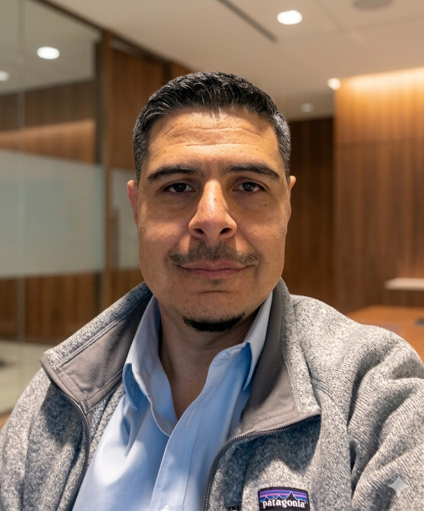

Miles de enfermeros, matrones y kinesiólogos en Chile están en la misma situación. Pero hay empleos reales, bien pagados y fuera del hospital que nadie te enseñó a buscar. Yo te muestro el camino.
Descarga gratis: "22 empleos en salud que no conocías en Chile"
Llevas semanas o meses postulando, pero el silencio es la única respuesta. En Chile, el mercado clínico público está saturado y las plazas son cada vez menos.
Haces turnos de noche, fines de semana y festivos, y aun así el sueldo no alcanza para vivir tranquilo. Estudiaste años para esto y no parece justo.
Sabes que hay algo mejor ahí afuera, pero nadie te enseñó cómo buscar trabajo fuera del hospital o la clínica. La universidad no te preparó para eso.
Todo tu currículum habla de pacientes y protocolos clínicos. Pero las empresas de salud fuera del hospital buscan otro perfil y no sabes cómo mostrarlo.
Hay empleos reales en Chile, con buenos sueldos y horarios normales, que necesitan exactamente lo que tú sabes. Solo que nadie te lo contó.
Pfizer, Roche, Bayer, Novartis y decenas de laboratorios en Chile contratan profesionales de salud para roles donde no se atienden pacientes y se gana el doble.
Banmédica, Colmena, Cruz Blanca necesitan enfermeros, matrones y kinesiólogos para revisar casos, gestionar pacientes y auditar prestaciones. Todo de lunes a viernes.
El boom de la telemedicina y las apps de salud creó cientos de empleos para profesionales clínicos que quieren trabajar con tecnología, muchos de ellos en modalidad remota.
Chile tiene más estudios clínicos por habitante que cualquier otro país de la región. Necesitan coordinadores con formación en salud y pagan muy bien. Sin turnos de noche.

Matrón con 17 años en salud en Chile. Trabajé en clínicas, en un laboratorio farmacéutico y en una isapre. Conozco los tres mundos.
También estuve en el momento en que el sueldo no alcanzaba y los turnos me desgastaban. Un día descubrí que mi experiencia como profesional de salud valía mucho más afuera del hospital que adentro, y me cambió la vida. Hoy ayudo a otros a hacer ese mismo camino, sin vueltas y sin perder tiempo.
Son empleos reales, en empresas que operan hoy en Chile, con sueldos mejores que el hospital y sin turnos de noche. Déjame tu correo y te lo mando ahora.